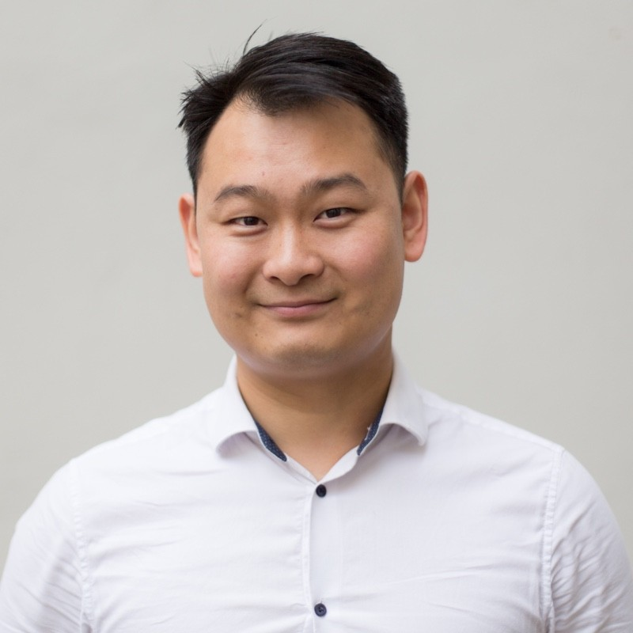

Liang Wang
Nasbydalsvägen 14 lgh 2308, 18337 Stockholm Sweden
liangtowang@gmail.com
+4670967155

Summary
Liang is a passionate QA Manager with over 10 years of experience in mobile
and web applications testing, including 5 years in test automation. He
is a certified Tester, Scrum Master, and Product Owner. He is a fluent Swedish
speaker, he even has an iOS app published in the App Store.
As an experienced QA Manager, Liang enjoys serving the teams and clients to
co-create quality. By crafting delightful and impactful products with
users experience in focus, he and his team has won the Swedish Design
Awards. When it comes to the technical part, Liang is a fast learner in
picking up new languages and frameworks such as Next.js, TypeScript,
Playwright, Cypress, Selenium, Appium, Swift, SwiftUI, etc.
Liang is a structured and goal-oriented test engineer by heart. He works
the best in a team setting and loves to share knowledge and learn new
things.
Experience
Senior Consultant
Sopra Steria Sweden AB
Dec 2023 - Present
QA Manager
Knowit Experience Stockholm AB
May 2023 - Oct 2023
Project: Scen & Film
Release planning and acceptance testing of a new website created for the client, and implement test automation.
Role: QA Manager
- Explore and evaluate end to end test automation tools for web applications
- Build and host web apps with Microsoft Azure, set up CI/CD with Github Actions workflow
- Automate testing of user registration and profile editing, saving and searching
Skills: Microsoft Azure, DevOps, Umbraco, Optimizely, Cypress, Playwright, TypeScript, Swagger, Continuous Integration, Continuous Delivery, Github Actions, Visual Studio Code, C#, ASP.NET, JavaScript, React, Next.js
iOS Mentor
Kodeco Inc
Jan 2023 - May 2023
Project: iOS Developer Bootcamp
Mentor a cohort of students from all over the world on iOS development in Swift and SwiftUI.
Role: iOS Mentor
- Plan the curriculum with staff and mentors and present course for the whole group of 50 students
- Guide 12 students through the 12-week intensive program material and homework for each week
- Feedback and answer questions in the forum and do code review in Github Pull Request
Skills: Swift, SwiftUI, Xcode, Git, Github, Firebase, Coaching, Feedback, Leadership
Senior QA Engineer
PayPal Limited, Filial Sweden
Apr 2022 - May 2023
Project: Zettle SDK
Build and test Zettle SDKs for integrators to enable SME merchants to take card and contactless payments from any iOS and Android app, using a Zettle card reader or scanning PayPal/Venmo QR code.
Role: Senior QA Engineer
- Create strategy and apps to test Zettle SDK for alternative payment methods such as PayPal/Venmo QRC, Klarna
- Contributed to the SDK iOS team by improving an existing payment flow in the test app
Skills: Appium, Selenium, TestNG, Java, Maven, Postman, Firebase, Swift, Xcode, CocoaPods, Kotlin, ADB, Android Studio, CircleCI, Git, Github, GitHub Issues, Zephyr Scale, Splunk, Jira, Confluence
QA Engineer
Bontouch AB
Jun 2016 - Apr 2022
07.2018 - 04.2022
Project: SEB Apps
Create modern mobile apps for SEB Bank private and corporate users as well as credit card holders, through the apps user can manager their everyday payments, savings, loans and attest invoices etc. Create modern mobile apps for SEB Bank private and corporate users as well as credit card holders, through the apps user can manager their everyday payments, savings, loans and attest invoices etc.
Role: QA Engineer
- Build a high performance QA team to communicate effectively with all stakeholders in product development lifecycle
- Lead test planning and release process, create and manage test protocols, execute tests manually and automatically
- Contribute to the QA competence area by sharing knowledge, tips and tricks
06.2016 - 06.2018
Project: SJ App
Create award-winning mobile app for the hundreds of thousands of daily users of the Swedish Railway with a big focus in delightful user experience, accessibility and security.
Role: QA Engineer
- Collaborated with a dynamic team of 20+ developers and designers who create design award-winning apps that touches over 100,000 users daily all over Sweden
- Built peak performance test team to effectively achieve the objectives of the highest quality and smoothest user experience to reduce the friction in the real world
- Managed the test protocols and merge test strategies into the rapid product development lifecycle to contribute to a productive yet healthy workflow
Skills: Xcode, Android Studio, TestFlight, Figma, Zeplin, git, Github, GitHub Issues, Team City, Crashlytics, JIRA, Confluence
System Tester
Mag+ AB
Mar 2014 - Jun 2016
Project: Mag+
Mag+ help clients to transform their content into digital format and distribute through mobile apps.
Role: System Tester
- Implemented exploratory testing in a complete ecosystem of mobile app creation and content distribution by testing apps, tools and the backend system
- Created test plans and delivered test reports to outline the system testing process and results for better communication and quality of product release management
- Built apps using the source code in both Xcode and Android Studio to test new features and verify bug fixes
Project: Mag+ Semble
Role: Test and Product Release Manager
- Certified scrum product owner to lead an agile team on a mission to create an intuitive tool for building and sharing mobile apps
- Facilitated communications between stakeholders to set up the product roadmap and owned the development process to build the right product quickly
- Worked closely with UI/UX designers and developers to identify the pain points in use cases and turned them into specific requirements for product development
Skills: Xcode, Android Studio, git, Github, GitHub Issues, Jenkins, TestFlight, Trello, JIRA, Confluence, Adobe Indesign
Consultant
Mediasmiths AB
Jan 2012 - Jun 2012
Project: TV4
Implement a metadata system for TV4 Group channels in production, publishing and distributing of lists and program information in text format and images
Role: Consultant
- Assisted in planning and implementation of latest media technology systems for clients by capturing user stories and developing them into specific technical requirements
- Recommended solutions for strengthening the OTT platforms leading to changes in their international video-encoding infrastructure
- Managed a Java JMS component testing of a continuous integration project for TV4 and thereby improving both testing process and overall code quality
Skills: Java, Linux, Ubuntu, Bash, Omni Graffle, TestRail, TestLink, Zephyr, JIRA, Confluence
Education
- KTH Royal Institute of Technology
- Stockholm School of Economics
- Beijing Forestry University
Certificate
- ISTQB Foundation Level
- Certified Professional Scrum Master
- Certified Scrum Product Owner
Language